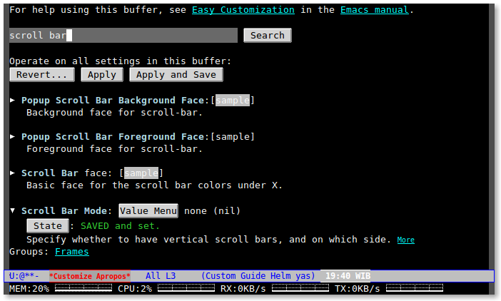
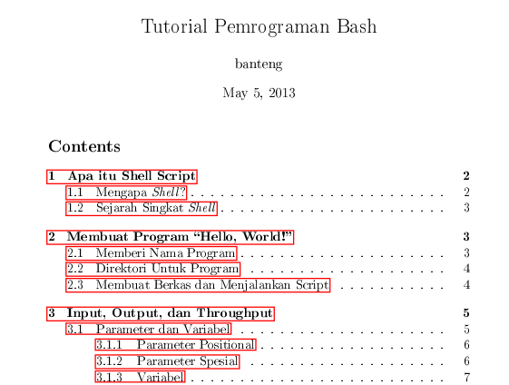
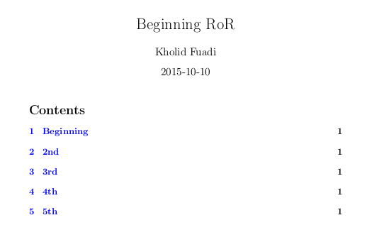
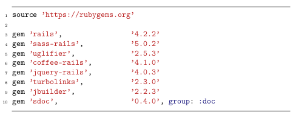

emacs - labs127.io and me
Table of Contents
- 1. Menjalankan emacs secara daemon
- 2. Mode Fullscreen di Emacs
- 3. Fungsi customize-saved
- 4. Menambahkan keyboard shortcut untuk emacs
- 5. Membuat tautan internal di emacs org-mode
- 6. Header org-mode untuk LaTeX export
- 7. Membuat teks rata tengah di org-mode
- 8. Syntax highlighting di latex org-mode
- 9. Membuat gambar centering di latex org-mode
- 10. Membuat garis horisontal di latex org-mode
- 11. Why org-mode not just plain LaTeX?
- 12. Kombinasi keystroke yang sering saya pakai di org-mode
- 13. Emacs Good Reads
Tulisan/tips yang ada di laman ini merupakan kumpulan catatan saya
selama bergumul dengan emacs. Syukur kalau masih works dan berguna
bagi pembaca sekalian.
1 Menjalankan emacs secara daemon
Emacs terasa lambat saat startup? Bahkan dengan processor i7 4790
RAM 8GB, dengan jumlah packages yang tidak terlalu banyak juga,
kadang emacs terasa lambat ketika startup.
Untuk menghindari hal ini, saya coba menggunakan fitur daemon yang
tersedia by default di emacs. Caranya adalah sebagai berikut:
Jalankan perintah ini di console:
emacs --daemon
Sekarang emacs sudah berjalan secara daemon di background. Untuk
menjalankan client emacs, jalankan perintah berikut:
# jalankan emacs window mode emacsclient -c -n /path/to/your/dir/or/file # jalankan emacs no-window mode emacsclient /path/to/your/dir/or/file
Perubahannya? Sangat signifikan! bahkan terasa lebih cepat membuka
emacs dibanding membuka aplikasi terminal.
Jika pingin lebih efektif lagi, Anda bisa menambahkan emacs --daemon
setiap kali mesin Anda boot.
Lagi, saya membuat custom alias di .bashrc sebagai berikut:
# alias emacs client alias emacs='emacsclient -n -c' # autostrat emacs --daemon if it's not running yet export ALTERNATE_EDITOR=""
Reload konfigurasi bash Anda:
source ~/.bashrc
Sumber1
2 Mode Fullscreen di Emacs
Salah satu cara untuk mengurangi distraction ketika sedang coding
adalah dengan membuat layar editor menjadi fullscreen. Kalau
bekerja di terminal, kita dapat dengan mudah menekan F11 untuk
mengaktifkan mode fullscreen. Bagaimana dengan emacs? Bisa tapi
butuh sedikit tweak di .emacs.
Tambahkan baris kode berikut di .emacs Anda:
;; F11 key to toggle full screen mode (defun toggle-fullscreen () (interactive) (set-frame-parameter nil 'fullscreen (if (frame-parameter nil 'fullscreen) nil 'fullboth))) (global-set-key [f11] 'toggle-fullscreen)
Reload konfigurasi dengan M-x load-file ~/.emacs. Sekarang coba
tekan F11, dan layar emacs akan berubah menjadi fullscreen!
Tekan F11 sekali lagi untuk kembali ke ukuran window sebelumnya.
3 Fungsi customize-saved
Ingin menghilangkan toolbar, menubar, scrollbar? Ada beberapa cara sih sebenarnya, pertama bisa melalui menubar, pilih
Options >> Customize Emacs >> Saved Options
Atau bisa dengan menambahkan baris berikut di ~/.emacs Anda:
(menu-bar-mode -1) ;; Disable menubar (tool-bar-mode -1) ;; Disable toolbar (scroll-bar-mode -1) ;; Disable scrollbar (tooltip-mode -1)) ;; Disable tooltip
Atau melalui fungsi customize-saved. Saya sendiri cenderung memilih
yang terakhir ini. Sebagai contoh, saya ingin menghilangkan
scrollbar di sebelah kanan, ketikkan fungsi berikut:
M-x customize-saved
Kemudian search scroll bar, cari Scroll Bar Mode tekan Return
kemudian ubah nilai, dan tekan Apply and Save.

4 Menambahkan keyboard shortcut untuk emacs
Pengguna ubuntu pasti familiar dengan shortkey Ctrl+Alt+t, ya
kombinasi tombol tersebut dapat membuka aplikasi terminal tanpa
harus bersentuhan dengan mouse.
Pagi ini muncul pertanyaan, kenapa tidak bikin shortkey juga untuk
emacs? Yah akhirnya langsung dieksekusi dengan melakukan konfigurasi
melalui System Settings >> keyboard (linux mint 17.1), dan
menambahkan custom shortcut disana.
Saya pilih kombinasi Ctrl+Alt+e, e untuk emacs, biar mudah
diingat. Dan satu hal lagi, command yang saya jalankan bukan emacs
., melainkan emacsclient -n -c ., hal ini karena saya sudah
menambahkan emacs --daemon (Baca artikel emacs as daemon) setiap
kali komputer menyala.
Yak, Ctrl+Alt+e, dan ZAP! emacs nongol dan siap diajak kerja!
5 Membuat tautan internal di emacs org-mode
Ingin merujuk ke bagian tertentu di org-mode? Caranya mudah, gunakan syntax tujuan seperti contoh berikut:
<<sec:one>>This is target heading.
Setelah itu Anda dapat merujuk pada tautan tersebut dengan:
[[sec:one][Lihat bagian ini]]
Secara otomatis, orgmode akan membuat tautan ke <<sec:one>> dengan
anchor text Lihat bagian ini. Atau jika ingin anchor text dibuat
otomatis menggunakan numbering (1, 2, 3, dst), dapat juga membuat
tautan tujuan dengan syntax:
[[sec:one]]
Selamat mencoba!
6 Header org-mode untuk LaTeX export
Awal perkenalan saya dengan LaTeX dulu karena tidak menemukan
program word processor yang mumpuni di Linux. Dari jaman openoffice
sampai libreoffice, masih saja ada kekurangpuasan, apalagi kalau
sebuah dokumen dikerjakan bareng tim yang menggunakan MS. Office
family, tambah puyeng deh, setting sama hasilnya bisa beda.
Setelah browsing sana-sini, akhirnya sadar kalau mau dokumen kita bisa dibuka di OS apapun dengan format yang dijamin sama, salah satunya adalah dengan membuat berkas dengan tipe PDF.
Salah satu aplikasi yang bagus untuk generate dokumen PDF katanya
adalah LaTeX2, maka dicobalah si Latex. Untuk hasil, jangan tanya,
PDF keluaran Latex kualitasnya masih paling bagus dibanding misalnya
dengan menggunakan libreoffice. Namun, learning curve nya itu yang
mungkin tidak setiap orang mampu melewatinya.
Setelah berkutat dengan LaTeX beberapa lama, dan mulai menggunakan
emacs instead of vim, tau jugalah saya bahwa ternyata ada
org-mode di emacs yang dapat digunakan untuk mengekspor dokumen
.org ke .tex kemudian ke .pdf. Meskipun dari pengalaman pribadi,
untuk dokumen yang sifatnya kompleks, kadang saya masih harus switch
ke .tex lagi, namun untuk dokumen yang tidak terlalu rumit,
org-mode ini adalah sebuah jawaban.
Producing high-quality PDF is as easy as typing in emacs + org-mode.
By default, tanpa setting tambahan, dokumen .org dapat langsung
diekspor ke .pdf (tentunya Anda sudah memasang tex di OS
Anda). Berikut ini adalah tampilan standarnya:

A little bit scary, huh?. Kurang suka dengan tampilan defaultnya?
Anda pun dapat meng-custom nya dengan menggunakan #+LATEX_xxx di
org-mode.
Dan berikut ini adalah salah satu setting-an yang sering saya pakai. Setting ini merubah link menjadi warna biru dan tanpa box merah yang menyeramkan itu.
#+TITLE: Beginning Ruby on Rails #+AUTHOR: Kholid Fuadi #+DATE: <2015-10-10 Sat> #+STARTUP: indent #+LATEX_CLASS: article #+OPTIONS: H:3 num:t toc:t \n:nil @:t ::t |:t ^:t -:t f:t *:t <:t #+LATEX_CLASS_OPTIONS: [a4paper] #+LATEX_HEADER: \usepackage{graphicx} #+LATEX_HEADER: \usepackage{hyperref} #+LATEX_HEADER: \hypersetup{colorlinks,citecolor=blue,filecolor=blue,linkcolor=blue,urlcolor=blue} #+LATEX_HEADER: \usepackage{minted} #+LATEX_HEADER: \usemintedstyle{emacs} #+LATEX_HEADER: \newminted{common-list}{font-size=\footnotesize} #+LATEX: \listoftables #+LATEX: \listoffigures #+LATEX: \pagebreak
Berikut ini tangkapan layarnya:

Lebih rapi dan lebih nyaman di mata (subjective detected)…
Note:
org-mode adalah satu mode yang kompleks di emacs, ini sepadan dengan fitur-fitur yang ditawarkan, jadi saran saya jangan pernah lelah mencoba dan eksplorasi.
Once you got hangout with it, it will be one of your most powerful tools
Selamat mencoba!
7 Membuat teks rata tengah di org-mode
Gunakan blok berikut untuk membuat teks rata tengah:
#+BEGIN_CENTER Teks ini rata tengah. #+END_CENTER
8 Syntax highlighting di latex org-mode
Tambahkan konfigurasi berikut di ~/.emacs Anda:
;; Include the latex-exporter (require 'ox-latex) ;; Add minted to the defaults packages to include when exporting. (add-to-list 'org-latex-packages-alist '("" "minted")) ;; Tell the latex export to use the minted package for source ;; code coloration. (setq org-latex-listings 'minted) ;; set minted options (setq org-latex-minted-options '(("frame" "lines") ("linenos=true") ("mathescape" "true") ("numbersep" "5pt") ;("gobble" "2") ("framesep" "2mm") ) ) ;; Let the exporter use the -shell-escape option to let latex ;; execute external programs. ;; This obviously and can be dangerous to activate! (setq org-latex-pdf-process '( "pdflatex -shell-escape -interaction nonstopmode -output-directory %o %f" "pdflatex -shell-escape -interaction nonstopmode -output-directory %o %f" "pdflatex -shell-escape -interaction nonstopmode -output-directory %o %f"))
Note: Di tutorial asli3, command yang digunakan adalah xelatex,
saya sendiri menggunakan pdflatex, so jika Anda punya command
lain, silakan disesuaikan.4
Tangkapan layar output:

9 Membuat gambar centering di latex org-mode
Berikut ini adalah contoh membuat gambar centering dan float here,
kalau di LaTeX [h!].
#+ATTR_LATEX: :float nil :width .6\textwidth file:img/emacs_customize_saved.png
{kind=link}
Anda dapat mengganti :float multicolumn untuk membuat gambar di satu
halaman khusus, tanpa ada teks lain. Atau sideways untuk membuat
gambar tercetak vertikal, dan banyak pilihan lainnya.
:width .6\textwidth berarti ukuran gambar adalah 60% dari lebar
area teks. Info lebih lanjut silakan pelajari tautan ini.
10 Membuat garis horisontal di latex org-mode
Berikut ini kodenya:
#+ATTR_LATEX: :width .6\textwidth :thickness 0.8pt
-----
11 Why org-mode not just plain LaTeX?
Flexibility! with org-mode we can deal text at a higher level than LaTeX, but drop to LaTeX when necessary.5
12 Kombinasi keystroke yang sering saya pakai di org-mode
Selain keystroke navigasi, ada beberapa kombinasi keystroke yang sering saya pakai di emacs. Berikut ini beberapa di antaranya:
| Keystroke | Keterangan |
|---|---|
| C-u C-c C-l | Membuat internal link with autocompletion, |
| berguna ketika membuat tautan ke berkas di sebuah direktori. | |
| C-c C-x f | Membuat footnote baru. |
| C-c C-e h o | Export org to HTML and open it in browser |
| C-c C-e l o | Export org to PDF and open it with PDF reader. |
Footnotes:
Font xelatex berasa lebih pekat hitamnya dibanding pdflatex.